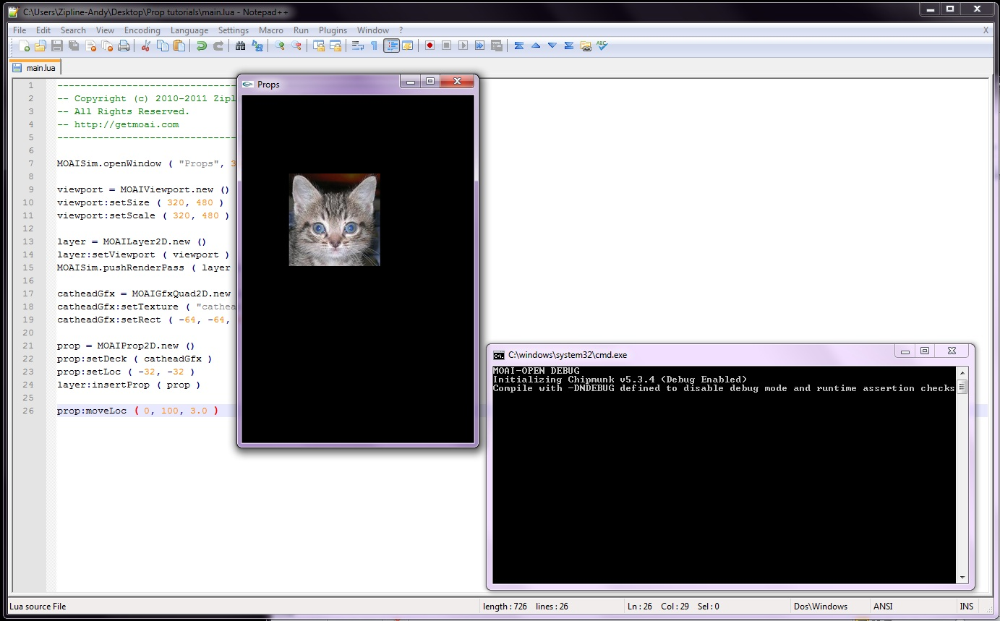
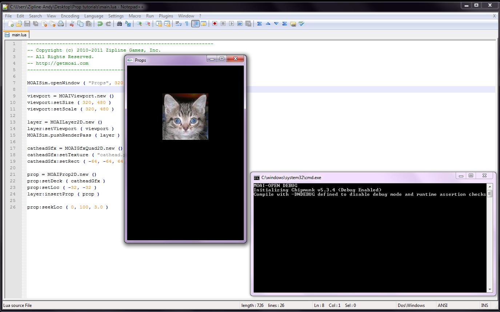
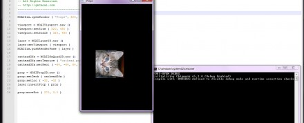
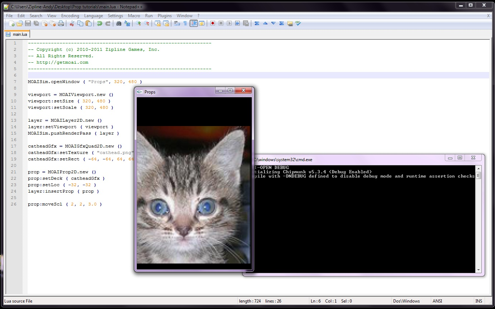
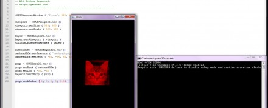

Basic Prop Animations
This tutorial will touch on a few of the types of animations that you can apply towards a prop; move/seek Loc, Rot, Scl, and Color. For consistency, this tutorial will just use the same base chunk of code while only editing the last line.
You can download the required files here.
{kind=link}
MOAISim.openWindow ( "Props", 320, 480 )
viewport = MOAIViewport.new ()
viewport:setSize ( 320, 480 )
viewport:setScale ( 320, 480 )
layer = MOAILayer2D.new ()
layer:setViewport ( viewport )
MOAISim.pushRenderPass ( layer )
catheadGfx = MOAIGfxQuad2D.new ()
catheadGfx:setTexture ( "cathead.png" )
catheadGfx:setRect ( -64, -64, 64, 64 )
prop = MOAIProp2D.new ()
prop:setDeck ( catheadGfx )
prop:setLoc ( -32, -32 )
layer:insertProp ( prop )
-- This is where your new code will go --
So now that the game window is set up, with the prop inserted onto the layer, it’s time to start messing with it. One important thing to learn about these animations is the difference between a move and a seek. Essentially, a move will simply add the amount of an animation to the current prop, while a seek will animate it to exactly what is specified. Since it's easier to show than tell, here's some code:
prop:moveLoc ( 0, 100, 3.0 )
This will move the prop 0 units along the X-axis, 100 along the Y axis, and it will be done over 3.0 seconds.

Now if you do a seekLoc, you’ll get a bit of a different outcome.
prop:seekLoc ( 0, 100, 3.0 )
This command will send the prop to the location of ( 0, 100 ) instead of simply moving along that axis.

So in short, a move will affect the object by an exact amount, while a seek will get the object to the exact point it was given. You can think of a seek as “move to.” You can also add an ease type, which will determine the rate that the object goes through the animation. You can find a list of Moai Ease Types here. Now that the difference between move and seek has been established, you can explore some other cat head transformation techniques. This time, you’re going to be rotating the little guy.
prop:moveRot ( 270, 3.0 )
This will rotate the cat head 270 degrees over a period of 3.0 seconds.

Now to make the cathead grow to immense proportions.
prop:moveScl ( 2, 2, 3.0 )
This will add to the scale of the prop.

Now that you've seen movement, rotation, and scaling, it’s time to change the prop's color. Easy enough.
prop:seekColor ( 1, 0, 0, 0, 3.0)
Running this will make the cat head turn a deep red. The seekColor takes in the following parameters: seekColor ( redGoal, greenGoal, blueGoal, alphaGoal, time) with a max on the goals of 1 meaning 100% saturation.

That’s it for this brief tutorial on prop animations. Next time : textboxes and fonts.